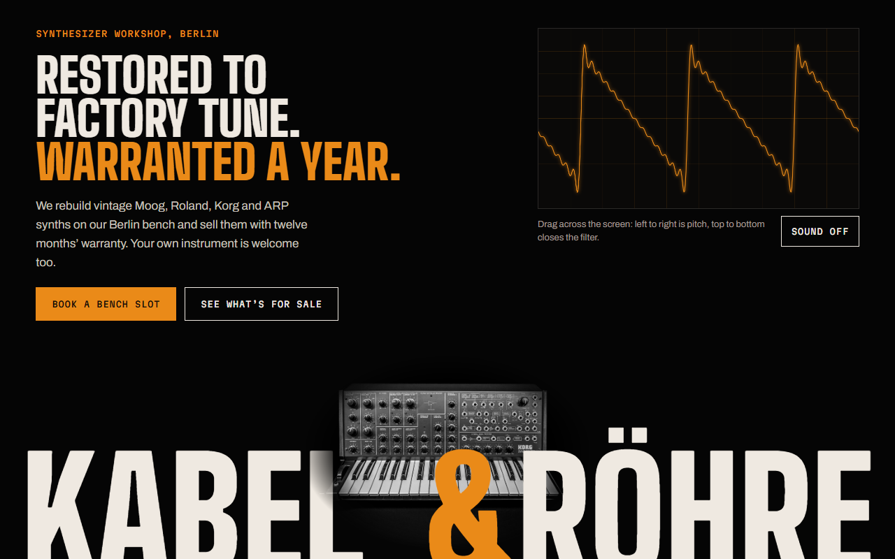
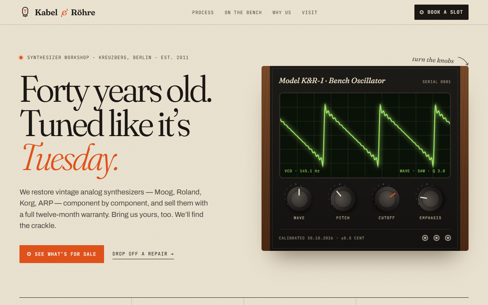

Kabel & RöhreVintage synth workshop, Berlin · full landing page
“Make a landing page for Kabel & Röhre, a Berlin workshop that restores vintage analog synthesizers (Moog, Roland, Korg, ARP) and sells them with a one-year warranty. They also take in customers' gear for repair. I want it premium with lots of personality, nothing generic. Sections: hero, how we restore, instruments for sale, why us, and a form to book a slot and drop off gear.”


WithoutWith Atelier